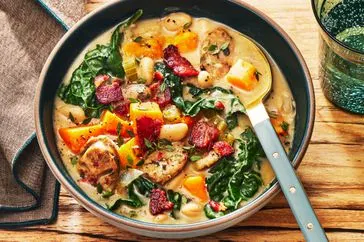

Back to Home
Million Dollar Soup

Delicious Million Dollar Soup
This milion dollar soup is creamy, cheesy, rich, and savory, and yet uses convenient rotisserie chicken, and easy canned soups to create the base.
Ingredients:
- 2 tablespoons butter
- 1 small onion, diced
- 2 cloves garlic, minced
- 1/4 cup all-purpose flour
- 4 cups chicken broth
- 1 can (10.5 oz) cream of chicken soup
- 1 can (10.5 oz) cream of mushroom soup
- 1 cup half-and-half or heavy cream
- 2 cups cooked rotisserie chicken, shredded
- 1 cup frozen peas and carrots
- 1 cup shredded cheddar cheese
- 1/2 cup grated Parmesan cheese
- Salt and pepper to taste
- Fresh parsley for garnish (optional)
Instructions:
- Preheat your oven to 375°F (190°C).
- Cook the lasagna noodles according to package instructions. Drain and set aside.
- In a large skillet, heat olive oil over medium heat. Add chopped onion and minced garlic, sauté until translucent.
- Add ground beef to the skillet and cook until browned. Drain excess fat.
- Stir in marinara sauce, salt, and pepper. Simmer for 10 minutes.
- In a baking dish, spread a thin layer of meat sauce. Layer with noodles, ricotta cheese, meat sauce, and shredded mozzarella. Repeat layers, ending with a layer of meat sauce topped with mozzarella and Parmesan cheese.
- Cover with foil and bake for 25 minutes. Remove foil and bake for an additional 15 minutes, or until cheese is bubbly and golden.
- >Let the lasagna rest for 10 minutes before serving. Garnish with fresh basil.